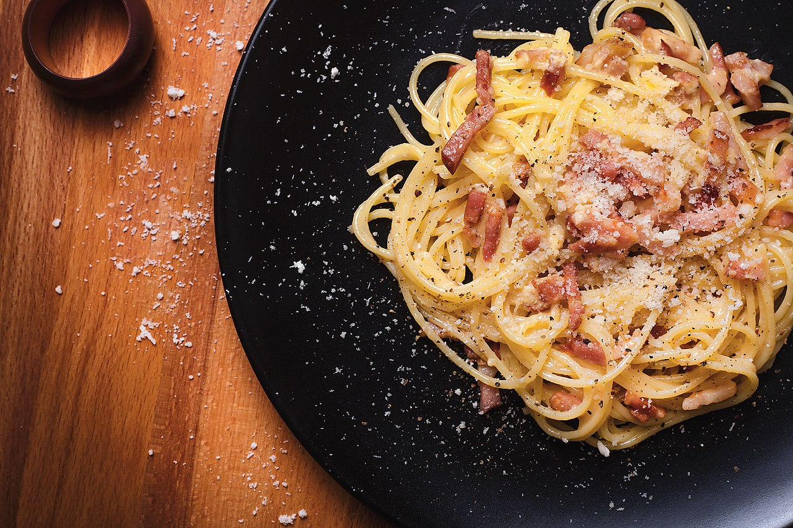
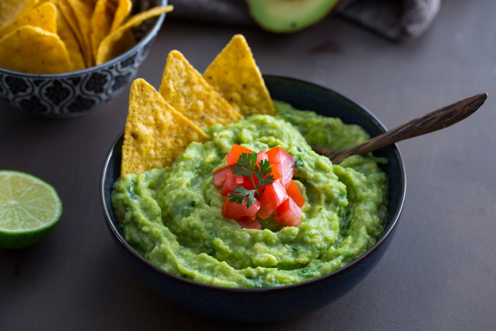

My Favorite Cuisine Recipes
Explore a collection of my favorite recipes from different cuisines around the world!
Spaghetti Carbonara

This classic Italian dish is simple yet delicious, combining pasta with pancetta, eggs, and Parmesan cheese.
Ingredients:
- 200g spaghetti
- 100g pancetta
- 2 large eggs
- 50g grated Parmesan
- Salt and pepper to taste
Instructions:
- Boil the spaghetti in salted water until al dente.
- Fry the pancetta until crisp.
- Whisk the eggs with Parmesan cheese.
- Mix the spaghetti with the pancetta and remove from heat. Add the egg mixture and stir quickly to create a creamy sauce.
- Season with salt and pepper and serve immediately.
Guacamole

A traditional Mexican dip made with mashed avocado, lime juice, and various seasonings.
Ingredients:
- 2 ripe avocados
- 1 lime, juiced
- 1 small onion, finely chopped
- 1 tomato, chopped
- Salt and pepper to taste
- Chopped cilantro (optional)
Instructions:
- Cut the avocados in half and remove the pit.
- Scoop out the flesh and mash it in a bowl.
- Add the lime juice, onion, tomato, and cilantro.
- Mix well and season with salt and pepper.
- Serve with tortilla chips or as a side for your favorite dish.
Chicken Curry

A flavorful Indian curry made with tender chicken, spices, and a creamy sauce.
Ingredients:
- 500g chicken breast, cut into chunks
- 1 onion, finely chopped
- 2 cloves garlic, minced
- 1 tablespoon curry powder
- 1 teaspoon ground cumin
- 1 teaspoon ground coriander
- 1 can coconut milk
- 2 tablespoons vegetable oil
- Salt and pepper to taste
- Fresh cilantro for garnish (optional)
Instructions:
- Heat the oil in a large pan and cook the onion until soft.
- Add the garlic and cook for another minute.
- Stir in the curry powder, cumin, and coriander, and cook for a minute until fragrant.
- Add the chicken and cook until browned on all sides.
- Pour in the coconut milk and bring to a simmer. Cook for 15-20 minutes, until the chicken is cooked through.
- Season with salt and pepper, and garnish with cilantro before serving.
French Toast
A simple breakfast recipe made by dipping bread in a mixture of eggs and milk, then frying until golden.
Ingredients:
- 4 slices of bread
- 2 eggs
- 1/2 cup milk
- 1 teaspoon vanilla extract
- 1/2 teaspoon ground cinnamon
- 2 tablespoons butter
- Syrup, powdered sugar, or fruit for topping (optional)
Instructions:
- In a shallow bowl, whisk together the eggs, milk, vanilla, and cinnamon.
- Dip each slice of bread into the egg mixture, making sure both sides are well coated.
- Melt the butter in a large pan over medium heat.
- Fry the bread slices in the pan until golden brown on both sides, about 2-3 minutes per side.
- Serve with syrup, powdered sugar, or fruit as desired.
Greek Salad
A refreshing and healthy salad made with tomatoes, cucumber, olives, and feta cheese.
Ingredients:
- 3 tomatoes, chopped
- 1 cucumber, sliced
- 1/2 red onion, thinly sliced
- 100g feta cheese, crumbled
- 1/4 cup Kalamata olives
- 2 tablespoons olive oil
- 1 tablespoon red wine vinegar
- Salt and pepper to taste
- Oregano for garnish
Instructions:
- In a large bowl, combine the tomatoes, cucumber, red onion, and olives.
- Drizzle with olive oil and red wine vinegar.
- Season with salt, pepper, and a pinch of oregano.
- Toss gently to combine, then top with crumbled feta cheese.
- Serve immediately or chill for 30 minutes for a colder salad.
Chocolate Chip Cookies
Classic chewy cookies loaded with chocolate chips, perfect for any occasion.
Ingredients:
- 1 cup unsalted butter, softened
- 1 cup white sugar
- 1 cup brown sugar
- 2 eggs
- 2 teaspoons vanilla extract
- 3 cups all-purpose flour
- 1 teaspoon baking soda
- 1/2 teaspoon salt
- 2 cups chocolate chips
Instructions:
- Preheat the oven to 350°F (175°C).
- Cream together the butter, white sugar, and brown sugar until smooth.
- Beat in the eggs one at a time, then stir in the vanilla extract.
- In a separate bowl, whisk together the flour, baking soda, and salt.
- Gradually add the dry ingredients to the wet ingredients, mixing until combined.
- Stir in the chocolate chips.
- Drop spoonfuls of dough onto a baking sheet and bake for 10-12 minutes, until golden brown.